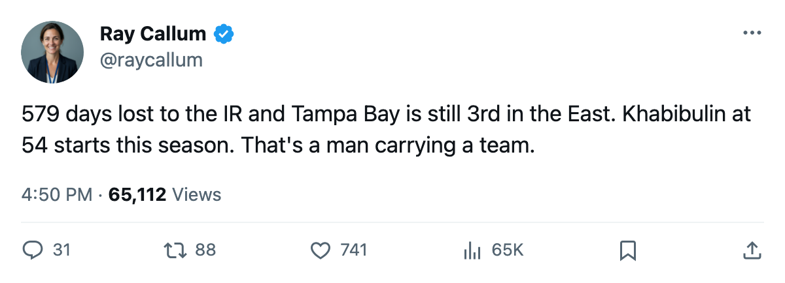

The Infirmary: Tampa Bay has lost 579 days to injury and won 6 straight
The Lightning lead the league in days lost and sit 3rd in the East with 88 points, five names deep on the injured list
 Ray CallumSenior correspondent · Home Ice Network
Ray CallumSenior correspondent · Home Ice Network
 Vincent Lecavalier84 hasn't skated since late February. His leg keeps him out until April 1.
Vincent Lecavalier84 hasn't skated since late February. His leg keeps him out until April 1.  Cory Stillman78 should be back tomorrow from a wrist.
Cory Stillman78 should be back tomorrow from a wrist.  Francis Bouillon70 is out until April 25 with a leg. Bill Lindsay68 returns March 11 from a concussion.
Francis Bouillon70 is out until April 25 with a leg. Bill Lindsay68 returns March 11 from a concussion.  Tim Taylor64 is back March 13 from a hip.
Tim Taylor64 is back March 13 from a hip.
Five men on the shelf, 44 injury spells this season, and 579 days lost to the training staff. No club in the league has given up more.  Tampa Bay Lightning has still won 6 in a row and sits 3rd in the East with 88 points.
Tampa Bay Lightning has still won 6 in a row and sits 3rd in the East with 88 points.
The 224 goals for, 198 against tell you the wins aren't flukes. Tampa Bay is outscoring opponents by 26. Its road record reads 19-13. On March 1 they went to Ottawa and won 2-1, the 6th straight without a regulation draw.
 Nikolai Khabibulin86 has started 54 of 65 games, 83 percent of the club's schedule.
Nikolai Khabibulin86 has started 54 of 65 games, 83 percent of the club's schedule.  John Grahame78 has 15 starts and Scott Clemmensen71 just 2. Khabibulin hasn't been given a night off while his team is in the middle of a run. The Lightning have played 65 games with 17 left.
John Grahame78 has 15 starts and Scott Clemmensen71 just 2. Khabibulin hasn't been given a night off while his team is in the middle of a run. The Lightning have played 65 games with 17 left.
The two highest-rated men on the roster, Lecavalier at 90 and Stillman at 84, are both out. The rest of the injured list is depth pieces: a leg, a concussion, a hip. The team still wins because Khabibulin keeps giving them a chance.
A 6-game run into a short home stand
Tonight Tampa Bay visits  New York Islanders, which is 26-29-4, 9th in the East, and has lost 1. The Islanders are 19-16 at home. The Lightning are 19-13 on the road. A 7th straight win would push Tampa Bay to 90 points with 16 games left, and the 8th seat (currently
New York Islanders, which is 26-29-4, 9th in the East, and has lost 1. The Islanders are 19-16 at home. The Lightning are 19-13 on the road. A 7th straight win would push Tampa Bay to 90 points with 16 games left, and the 8th seat (currently  Atlanta Thrashers at 68) would be 22 points back.
Atlanta Thrashers at 68) would be 22 points back.
Lecavalier's absence costs them the center who carries the top power-play unit. Stillman's absence removes a winger who can finish on either side of the ice. The hip and the leg and the concussion are pieces that can be replaced by a call-up or a healthy scratch moved up.
The trade deadline is 15 days away. Tampa Bay's front office will have to decide whether Lecavalier's April 1 return makes a trade for a center worthwhile, or whether they trust what they've shown for 6 games without him.
